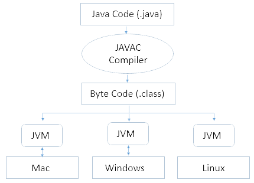

JAVA VIRTUAL MACHINE
Centar cijele Java softverske platforme. Ona izvodi tzv. Java bytecode koji se ne razlikuje s obzirom na operacijski sustav ili hardver pod kojim se pokreće. On omogućava Java programima pokretanje na bilo kojoj platformi koja ima dostupan „virtual machine“. Iako su Java aplikacije univerzalne između svih platformi, kod Java Virtual Machine-a koji ih pokreće nije. Svaka podržana operacijska platforma ima svoj Java Virtual Machine.
